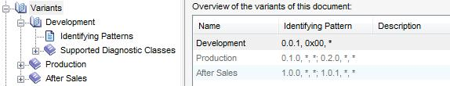

Dialog "Variants"
Chapter “Variants” shows a list of all variants contained in the document (CDS-1033 3.0).
The table contains three columns:
Column “Name” contains the name of the variant.
Column “Identifying Pattern” contains a summary of values that allow detection of the variant at runtime (like the upper table in the entry mask of chapter “Identifying patterns”).
Column “Description” contains the description of the variant (shown as pure text with line-breaks replaced by blanks)
The table is read-only.
The table shows the extended variants (not the base variant) in the order defined in the document. Therefore, the table is not sortable.
Button [Variant Wizard] or clicking the magic line creates a new variant using the Variant Wizard.
The context menu allows to
R050.1: provide the Lock operation in GUI, as:
a) no “Lock Variant” button in right side of extended variant!
b) “Lock” in context menu of extended variant in tree (below “Reference As Base Variant”; sensitive iff. the variant is not locked)
Let the user confirm the operation, like “After locking the variant, you cannot edit its diagnostic instances and services any more. All data types referenced in the variant will be read-only. All referenced DTCs will be copied locally into the variant.”.
Note: the protection applies only to Standard View!
R060.0: for variants that are locked, show the tree node in a special way (“lock” overlay to the existing symbol).
R065.0 (Frontend):
a) when user starts to edit a container in a locked variant: show info that editing is not possible due to variant lock (analogous to behavior for write-protected container)
b) when user starts to edit a write-protected container in a non-locked variant which is referenced in a locked variant: show info that editing is not possible due to write-protection (= missing authorization)
c) when user starts to edit a writable container in a non-locked variant which is referenced in a locked variant: show info that editing is not possible due to locked variant. If container is not “required as reference”, then additionally give a hint that user must first replace the reference by a copy.
d) for all objects in a container which is referenced in a locked variant: do not allow editing in the object property dialog (set controls insensitive, analogous to behavior for write-protected container)
R070.2 (Frontend):
a) do not show locked variants in the variant selection of import pool.
b) Tree node “States/Dependencies”: in the variant selection combo box, add a postfix “(locked)” (German “(gesperrt)”) to each locked variant (cf. same behavior of corresponding combo boxes of the tab cards of the vehicle system group entry mask).
c) Tree node “States/Dependencies”: in “Editing” mode, disable inline editing of the table if a locked variant is selected (via the variant selection combo box, or on entry).
Note: nothing to do in DTC overview, because for copying/referencing, it shows only Fault Memory diagInstances with modifyPrimary = true.
R250.1 (Frontend): in a locked variant
a) do not allow to replace a copy of a container by a reference
b) do not allow to cut, de-activate or delete a container
c) do not allow to add a diagnostic class (e.g. in overview / via context menu / paste)
d) do not allow to delete a diagnostic class (e.g. in overview / via context menu / cut)
e) do not allow to sort containers (via diagClass menu, or via Move Up/Down).
Note: allow deleting the variant (e.g. to be able to use the file as a copy base).
R251.0 (Frontend, CDS-22143): in a locked variant
b) do not allow to add / modify / delete identifying patterns
c) do not allow to modify the variant properties (name, qualifier, description, …)
d) In state transitions property page of service/job ensure that check box “Service/Job relevant for <STATEGROUP>” is inactive if the diagnostic instance is contained in a locked variant (note, this also applies when the diagnostic instance/job container currently being edited is not located in a locked variant but it is also referenced from a locked variant)
e) Set state transitions property of a service/job to inactive if the parent diagnostic instance is contained in a locked variant (see note of d)
f) do not allow to reference the variant as Common Diagnostics.
R300.0 (Frontend, CDS-22143 7.1 SP2): in Expert View, allow unlock of variant. Effect: reset the property of R010, no other change (especially, keep referenced datatypes write-protected).